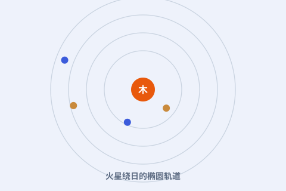
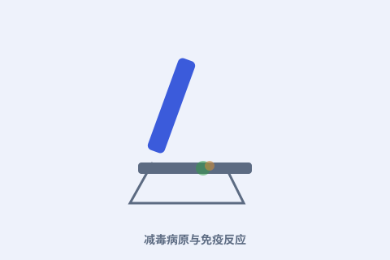
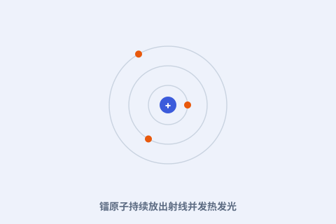
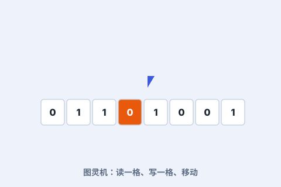
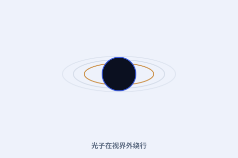

全部 15 位 · 已上线
挑一位科学家开始读
点开任意一张卡片，进入 TA 的完整子站点（含时间轴、详解、动手玩一玩与术语词典）。也可以直接搜索。

1473 – 1543
尼古拉·哥白尼
用「日心说」把地球请出宇宙中心，掀起科学革命的第一声惊雷。
进入哥白尼站 →
1564 – 1642
伽利略·伽利雷
用望远镜把天空拉到眼前，用斜面与摆锤重新定义「运动」，近代实验科学之父。
进入伽利略站 →
1571 – 1630
约翰内斯·开普勒
行星运动三大定律，用椭圆轨道把日心说变成可精确计算的模型。
进入开普勒站 →
1643 – 1727
艾萨克·牛顿
三大力学定律与万有引力，第一次把天体与地面连成同一种规律；还发明了微积分。
进入牛顿站 →
1791 – 1867
迈克尔·法拉第
发现电磁感应、造出第一台发电机，提出「场」与力线——今天点亮世界的电，源头在他手上。
进入迈克尔·法拉第站 →
1809 – 1882
查尔斯·达尔文
进化论与「物竞天择」，重新解释所有生命的来处与彼此的关联。
进入达尔文站 →
1822 – 1895
路易·巴斯德
巴氏杀菌与疫苗，微生物学奠基，实打实拯救了无数人的生命。
进入巴斯德站 →
1831 – 1879
詹姆斯·麦克斯韦
用一组方程统一电、磁与光，现代通信的全部根基都从这里长出。
进入麦克斯韦站 →
1834 – 1907
德米特里·门捷列夫
元素周期表，把混乱的化学元素排成可被预言的秩序。
进入门捷列夫站 →
1867 – 1934
玛丽·居里
发现放射性元素钋与镭，两获诺贝尔奖，亲手推开原子时代的大门。
进入居里夫人站 →
1879 – 1955
阿尔伯特·爱因斯坦
相对论重写时间、光与引力，E=mc² 成为史上最有名的等式。
进入爱因斯坦站 →
1885 – 1962
尼尔斯·玻尔
原子模型与量子跃迁，为现代量子力学奠定基石。
进入玻尔站 →
1912 – 1954
阿兰·图灵
图灵机与可计算性，计算机科学与人工智能的思想源头。
进入图灵站 →
1918 – 1988
理查德·费曼
路径积分与费曼图重塑量子力学，用一杯冰水找出挑战者号事故真相，也是最会讲物理的人。
进入理查德·费曼站 →
1942 – 2018
斯蒂芬·霍金
黑洞辐射与宇宙学普及，把最前沿的时空之谜讲给全世界听。
进入霍金站 →